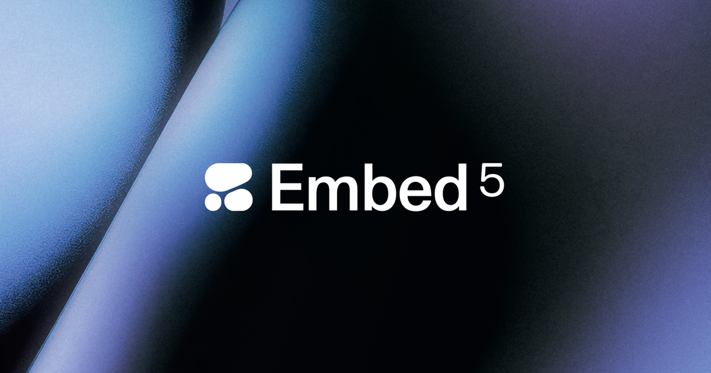
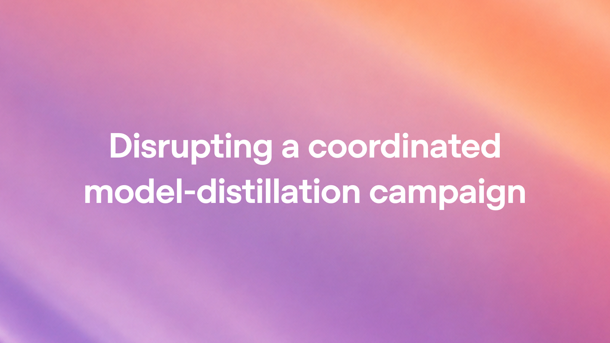
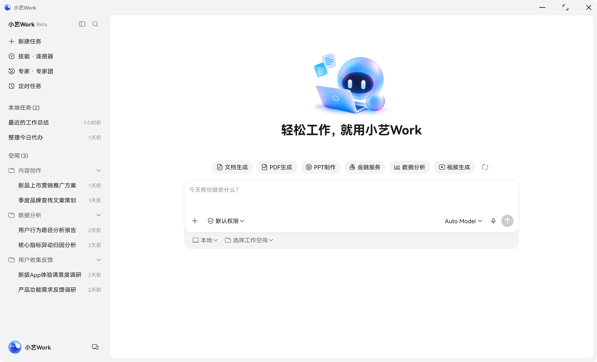
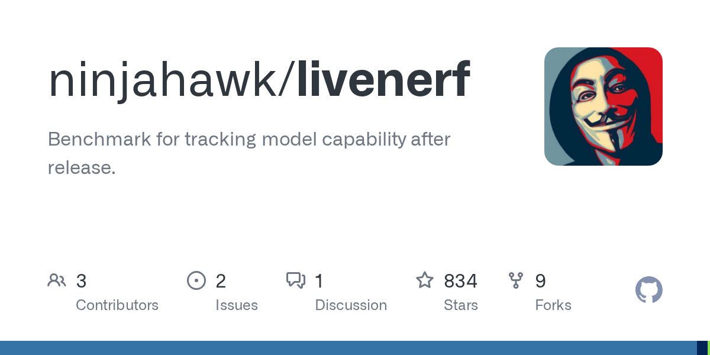
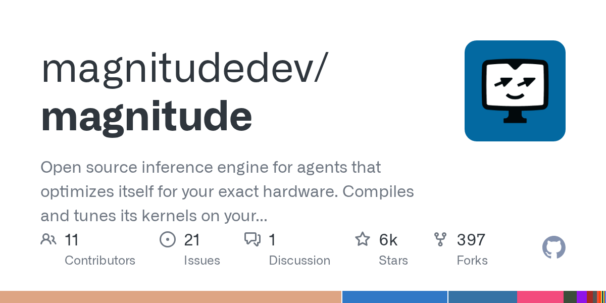
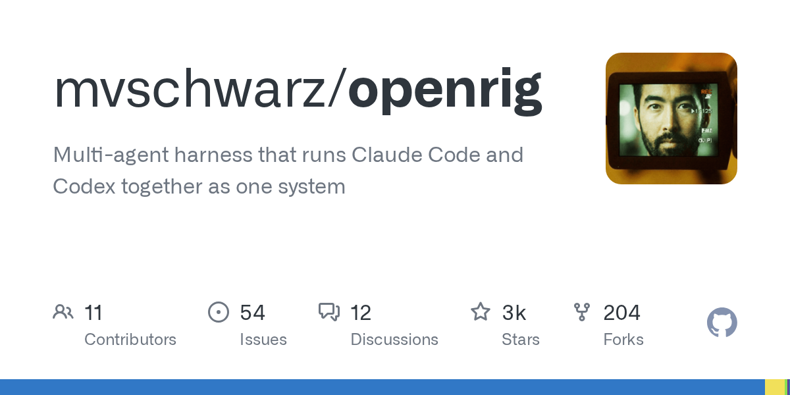

AI Intelligence Daily · 2026-10-01
专栏一｜新闻
1. Google Gemini 4 Argon —— Fairwind 限域下一档 frontier
事实
Google 发布 Gemini 4 Argon：长程工作流（软件工程 / 企业知识工作 / 网络安全防御）。首批经 Fairwind Program 向可信 cyber defenders 释出；随后扩开发者/企业/消费者，先付费 API 与 Google AI Ultra。输出上限 1M。自评 DeepSWE 77.9%；CWE-bench 68%。介绍价 $2/$10 → 后期 $4/$20（cached input −95% claim）。
关键 caveat：Fairwind 限域 / 非今日公众 GA——勿写成「全员可调用」。HN 875p / 594c；X 宽口径 ≈16894。
判断
一线厂新一代前沿模型正式官宣 → 强 A；限域释出路径本身也是产品情报。与 Sol/Astra/Opus 对照价值高。

2. Manus Flex —— BYOK + Inference Partner Program
事实
Flex：用户自有 API key 接入推理商，仍用 Manus harness/tools/environments/projects/automations；模型推理由 provider 直计费。首批：OpenRouter · Fireworks · Modal。X @ManusAI 00:00:41Z。本轮：博文仍 200；Desktop Setup 仍 2.0.2（2.0.3→403）——不 dual-count 为新 Desktop shipping。
判断
Work Agent harness 正式打开 BYOK → 强 A；与 Setup 2.0.2 / Manus 2.0 本体不同实质。
3. Cohere Embed 5（Pro / Fast）—— now available
事实
Embed 5 Pro/Fast「now available」；企业检索 SOTA（多模态/多语/金融文档）；可达 API / Model Vault / Foundry / SageMaker / North；Pro/Fast 共享 embedding 空间。日间 near → 日报升格。
判断
检索栈实质发船 → 对 Agent RAG/记忆检索有吸收价值。

4. Claude Code 2.1.285→2.1.286（stable 仍 2.1.285）
事实
@anthropic-ai/claude-code latest=2.1.286；stable 仍 2.1.285。权限「N of M」；多进程登录风暴修复；--resume 并行 tool 丢轮次；tool/hook 非 text→400；MCP/凭证日志脱敏等。
判断
≥B pin UPDATE；无大功能叙事 → 不升强 A。注意 stable 未翻。
5. GitHub Copilot · HydraFusion → VS Code + Copilot app
事实
HydraFusion 从 Copilot CLI 扩到 VS Code 与 Copilot app；多模型编排（draft/critique/revise/escalate）。仍标 research preview；Business/Enterprise 需 admin。Default Enablement 仍 → Oct 22。
判断
多模型编排进主 IDE → B；非新基座、非 GA → 不升 A。
6. OpenAI · Disrupting coordinated model-distillation campaign
事实
官方称发现协调式蒸馏活动，试图提取受保护 reasoning；已部署缓解。RSS pubDate 10:30Z；过夜 LBD→23:45:17Z 显现（日间 flash 未见）。
判断
非产品发船，但对模型安全/蒸馏威胁面有情报价值 → B。

7. OpenRouter `/tools` API —— Server Tools Marketplace
事实
「New API: /tools」——agents 可从 Server Tools Marketplace 拉取数据（含市场价格）并可编程使用。docs 页 200。
判断
对 Agent 工具发现直接相关 → B；非自有基座。
8. 小艺 Work Desktop 0.7.2→0.7.3
事实
manifest 仍 0.7.3（optional）；产物卡片双列网格；深度研究/PPT 技能；任务停止态；WPS/定时修复；数字签名。无 0.7.4。overnight 无再升。
判断
体验/稳定性补丁 → B absorb；勿抬强 A。

专栏二｜话题热议
1. Gemini 4 Argon 热议（HN 顶栏 · overnight）
事实
窗后半夜冲上 HN 最高分 AI 帖；V2EX 跟帖薄（13r）。产品发船已在新闻条，此处只记热度。
判断
overnight 社区验收面；选型仍以 Fairwind 可达性为准。
2. 「You said no MCP」：Pi 从拒 MCP → 核心支持
事实
Earendil/Pi：将 MCP 纳入 core（原扩展）。相对快讯 ~363 爬升至 ~598 → 升格。对照 MCP spec 仍钉 2026-07-28。
判断
拒协议派回心——对 harness core vs 扩展与 sandbox 设计直接相关。

3. Livenerf：Opus「降智」监测热爆
事实
昨 115p/★223 → 今 877p / ★836。silent nerf 监测基础设施。
判断
评测/模型 pin 相关 → 纳入评测短名单。

4. Launch HN: Magnitude —— 自优化 Agent 推理引擎
YC S25：按本机硬件自编译/调优 kernel；称相对 llama.cpp 最高约 2×。本地/边缘 Agent runtime 推理层候选。

专栏三｜开源雷达
1. openrig ★3009（+585）· v0.6.3 —— Claude+Codex multi-agent harness
修 0.6.2 Managed Claude messaging 回归；Trending +624★/d → 跟进升级验证。

2. orca ★82348 · v1.4.218 —— Codex 独立 server + 多 harness 内置
Codex 每终端独立 server 默认开；内置 DeepSeek Harness / Qoder / CodeBuddy 等。ADE 舰队 → 升到 1.4.218。
3. magnitude ★5707 · Launch（与话题交叉）
自优化 Agent 推理引擎；开源栏侧重本地 kernel/硬件适配。见图 8。
4. livenerf ★836 · OpenShell Trending #1 · Pins
livenerf 与 HN 热爆同向（见图 7）。OpenShell 仍 v0.1.2，★12615，Trending #1 +1281★/d，tip→9912d21——不升版。hindsight/paperclip 无新 release 续涨。交叉：claude-code 2.1.286 · MiniMax CLI 0.5.10 · MCP 2026-07-28。
重点事件新进展
- Gemini 4 Argon：Fairwind 限域官宣 20:00Z；HN/X 过夜热议 → 强 A NEW（非公众 GA）。
- Manus Flex：日报正式 absorb；Setup 仍 2.0.2；无 Flex 实质 UPDATE。
- Sol / dots / DevDay：HN 爬升（1048p / 748p）；无产品 Δ → 不重抬主条。
- Claude Code：latest 2.1.286；stable 仍 2.1.285。
- Embed 5 / HydraFusion / OR /tools / distill：日间 near → 日报 ≥B。
- 国内 pins：小艺 0.7.3 absorb；DeepSeek / MiniMax 3.1.0 / Manus Setup / Kimi / ZCode / Qoder overnight 无再升。
- OpenShell：仍 v0.1.2；tip 过夜前进；Trending #1 —— 不升格 release。
- 未变钉：MCP 2026-07-28 · Cursor Sep23 · Copilot Default Enablement→Oct 22 · Qoder Flash 结束日 TBD。
今天正在形成的趋势
- 「新前沿模型限域释出」（Argon / Fairwind）——渠道策略成为选型变量。
- 「Harness 打开供应商」（Flex BYOK + OR /tools）。
- 「协议/评测纪律」升温（Pi 回心 MCP + livenerf）。
- Multi-agent harness 小步快跑（openrig 0.6.3 + orca 1.4.218 + Code 2.1.286）。
对智能体互联网
- Pi「从拒 MCP → core」——协议采纳路径与 sandbox 张力。
- OpenRouter
/toolsMarketplace API——工具发现可编程拉取样板。 - Manus Flex 多推理 BYOK——密钥隔离与配额边界。（MCP/A2A 无正式协议 bump。）
对 Work / Agent 引擎
- Argon（Fairwind caveat）+ Embed 5——下一档 frontier 与检索栈。
- Flex BYOK + HydraFusion 进 VS Code——harness/推理解耦与 IDE 扩面。
- openrig 0.6.3 / orca 1.4.218 / Code 2.1.286 resume·MCP 脱敏 / livenerf——编排可靠性与 silent-nerf 纪律。
值得继续跟踪
- Argon Fairwind→API/Ultra · Flex 伙伴/Setup>2.0.2 · Embed 5 实测
- Claude Code stable 翻 · HydraFusion GA · OR /tools 深度
- 小艺 0.7.3+ · MiniMax CLI 0.5.10+ · DeepSeek Desktop 实机
- openrig 0.6.3+ · orca 1.4.218+ · magnitude · livenerf
- OpenShell >0.1.2 · MCP / Cursor Sep23 · Copilot Default Enablement · Oct 22
- Qoder Flash 结束日 · Sol/dots 采用面（无产品 Δ 不重抬）
未来信号
「新前沿模型限域释出 + harness 打开供应商 + 协议/评测纪律」三线并进——竞争从「模型谁更强」扩展为「谁能先用到、用哪家推理、协议与评测如何可审计」。
价格 / 订阅雷达
Argon 介绍价 $2/$10 → 后期 $4/$20。MiniMax promo → 约 10/7。Qoder Flash 10/1 续免（结束日 TBD）。未见其他全站调价。
信源与方法
P0+P1 国内外官网/changelog/RSS + 官方 X；HN/V2EX/gh/Trending。X：intl≈$0.23 · cn≈$0.29 · social≈$0.10（三轨分批合计约 $0.6 量级）。配图仅原文真实图。完整 MD：reports/2026-10-01.md · 扫描底稿 /workspace/daily-2026-10-01-*.md。